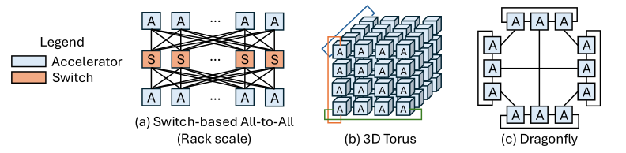

Deployment Hierarchy and Interconnect Domains
4.5.1Physical Deployment Hierarchy and Scale-Up/Scale-Out Domains#
Large-model execution engages every physical level of a datacenter at once, so it helps to have the levels straight before reasoning about any of them.

At the server level, accelerators are integrated with local communication resources. Racks and pods aggregate servers into progressively larger systems, and datacenter infrastructure supplies power delivery and thermal management. Computation and model state are distributed across devices, partitions exchange data over the interconnect fabrics, and facility-level power and cooling cap how much of the installed hardware can run at once.
The critical point for an architect is that these physical levels are not communication boundaries. A scale-up fabric may span multiple servers, multiple racks, or an entire pod. Two distinct ideas are therefore in play:
- A scale-up fabric tightly couples a group of accelerators — within a server, a rack or a pod — and is engineered for very high bandwidth and low latency.
- A scale-out network, usually Ethernet or InfiniBand, connects those groups across the broader cluster.
Because collective communication and model-parallel data movement are usually limited by intra-cluster efficiency, the scale-up fabric has a first-order effect on end-to-end training and inference performance. Modern clusters can contain hundreds of thousands of accelerators. Within them, typical scale-up tiers run from 4–8 accelerators in a node-scale group, to 64–256 in a rack-scale group such as NVL72, while larger pod or SuperPod fabrics span multiple racks and can reach thousands of accelerators [1, 2].
4.5.2Node-Scale Scale-Up Interconnect#

The baseline design uses one or more PCIe switches to give CPUs, accelerators, NICs and peripherals packet-switched any-to-any connectivity. It is standards-based, flexible and easy to integrate, but its bandwidth lags purpose-built accelerator fabrics: even PCIe 6.0 delivers only about 128 GB/s per direction on a ×16 link, which becomes a bottleneck for workloads dominated by collectives such as AllReduce, ReduceScatter and AllGather.
Direct all-to-all topologies remove the switch entirely and wire accelerators to each other. Intel's Gaudi 3 is an explicit eight-accelerator direct all-to-all fabric [3], and AMD Instinct platforms use dense direct Infinity Fabric connectivity across eight GPUs [4]. Single-hop communication gives very high local bandwidth, but wiring and packaging complexity grows quickly with system size — the link count rises quadratically with endpoints.
Switched fabrics dedicated to scale-up traffic recover that scalability. The NVIDIA HGX H100 platform uses four NVSwitch chips to fully interconnect eight GPUs [5], and successive NVLink generations have continued to raise per-GPU fabric bandwidth.
4.5.3Rack-Scale Scale-Up Interconnect#

Switch-based any-to-any interconnects extend from the node to the rack. The NVL72 rack integrates 72 GPUs and 18 NVSwitches as 18 compute trays, each with four GPUs and two Grace CPUs, plus nine switch trays with two NVSwitches apiece. AWS Trainium 3 follows the same direction with NeuronSwitch-v1, providing an all-to-all fabric within a Trn3 UltraServer containing either 64 or 144 chips [6]. Against direct-connect designs, switching scales to larger local domains and simplifies board wiring, at the price of switch silicon, power and packaging.
Any-to-any connectivity requires link or switch resources to grow with the system, so many architectures instead bound the per-accelerator degree and accept a larger network diameter. The torus is the representative case. AWS Trn1 uses a 2D torus within one instance [7]; Trn2 keeps a 2D torus within each 16-chip instance and joins four instances into a 64-chip UltraServer with extra ring links [8]. Google TPU v4 uses three-dimensional nearest-neighbour connectivity and can be configured as a 3D torus on supported slices, with four TPUs per board and 64 per rack in a 4×4×4 mesh. Optical circuit switches connect these groups and provide wraparound paths for supported torus slices, enabling flexible allocation and reconfiguration [9].
Hierarchical high-radix topologies such as Dragonfly take a third path: group endpoints with dense local connectivity and connect groups through a limited number of global links, reducing network diameter without paying for a full mesh. Groq's earlier rack-scale work describes Dragonfly-based expansion [10]. NVIDIA separately describes the 256-LPU Groq 3 LPX rack as using direct chip-to-chip links within trays and a chip-to-chip spine across trays, without identifying that rack as Dragonfly [11].
4.5.4Pod-Scale Scale-Up Interconnect#

At pod scale the designs get deeper rather than wider. Google's forthcoming TPU 8i introduces Boardfly, a Dragonfly-inspired topology that aggregates four-chip building blocks into eight-board groups and interconnects 36 such groups through optical circuit switches [12].
Huawei's UB-Mesh proposes a hierarchically localized nD-FullMesh on a unified bus and protocol stack; its published pod design realizes a 4D full mesh by composing full-mesh connectivity within and across racks, supported by dedicated low-radix and high-radix switches [2]. Microsoft Maia takes an Ethernet-based route: a two-tier topology whose first tier is a switchless fully connected quad of four directly connected accelerators, with the second tier using Ethernet switches to extend the scale-up domain across racks to as many as 6,144 accelerators [13, 1].
4.5.6Topology Performance: Connectivity Is Not Effective Communication Performance#
Putting the three tiers side by side, each topology choice trades the same four quantities — bandwidth, latency, scalability and implementation cost — against each other differently:
- PCIe switching is the broadly supported baseline, but documented deployments generally give lower per-accelerator bandwidth than purpose-built scale-up fabrics.
- Direct full meshes give single-hop communication, but link count grows quadratically with the number of endpoints.
- Switched any-to-any fabrics accommodate concurrent collectives and irregular traffic, provided switch capacity, routing and endpoint injection bandwidth all suffice — at the cost of switch power and packaging complexity.
- Tori keep node degree bounded as the system grows, but their larger diameter can raise communication latency.
- Dragonfly- and Boardfly-like hierarchies shorten paths without full-mesh connectivity at system scale, while UB-Mesh and Ethernet-switched designs add further tiers of local and global connectivity.
The reason this section exists as its own topic is that none of these properties is a performance number. A topology defines the paths, the locality hierarchy and the contention domains that are available; what a workload actually achieves depends on how its communication is scheduled onto them. Topology is therefore co-designed across node, rack and pod scales rather than chosen once.
References
- 1.Saurabh Dighe and Artour Levin. Deep Dive into the Maia 200 Architecture. https://techcommunity.microsoft.com/blog/azureinfrastructureblog/deep-dive-into-the-maia-200-architecture/4489312, 2026. Azure Infrastructure Blog. Published Jan. 26, 2026; updated Jan. 30, 2026.
- 2.Heng Liao et al. Ub-mesh: a hierarchically localized nd-fullmesh datacenter network architecture. IEEE Micro, 2025.
- 3.Roman Kaplan. Intel gaudi 3 ai accelerator: Architected for gen ai training and inference. 2024 IEEE Hot Chips 36 Symposium (HCS), 2024.
- 4.Alan Smith and Vamsi Krishna Alla. AMD Instinct™ MI300X: A Generative AI Accelerator and Platform Architecture. IEEE Micro, 2025.
- 5.NVIDIA. NVIDIA NVSWITCH: The World’s Highest-Bandwidth On-Node Switch. 2018.
- 6.AWS. Amazon EC2 Trn3 Architecture. 2026. AWS Neuron SDK 2.31.1 documentation.
- 7.AWS. Amazon EC2 Trn1 Architecture. 2026. AWS Neuron SDK 2.31.1 documentation.
- 8.AWS. Amazon EC2 Trn2 Architecture. 2026. AWS Neuron SDK 2.31.1 documentation.
- 9.Norm Jouppi et al. Tpu v4: An optically reconfigurable supercomputer for machine learning with hardware support for embeddings. Proceedings of the 50th annual international symposium on computer architecture, 2023.
- 10.Dennis Abts et al. A software-defined tensor streaming multiprocessor for large-scale machine learning. Proceedings of the 49th Annual International Symposium on Computer Architecture, 2022.
- 11.Kyle Aubrey and Farshad Ghodsian. Inside NVIDIA Groq 3 LPX: The Low-Latency Inference Accelerator for the NVIDIA Vera Rubin Platform. 2026.
- 12.Google Cloud. Inside the eighth-generation TPU: An architecture deep dive. 2026.
- 13.Sherry Xu and Chandru Ramakrishnan. Inside maia 100. 2024 IEEE Hot Chips 36 Symposium (HCS), 2024.